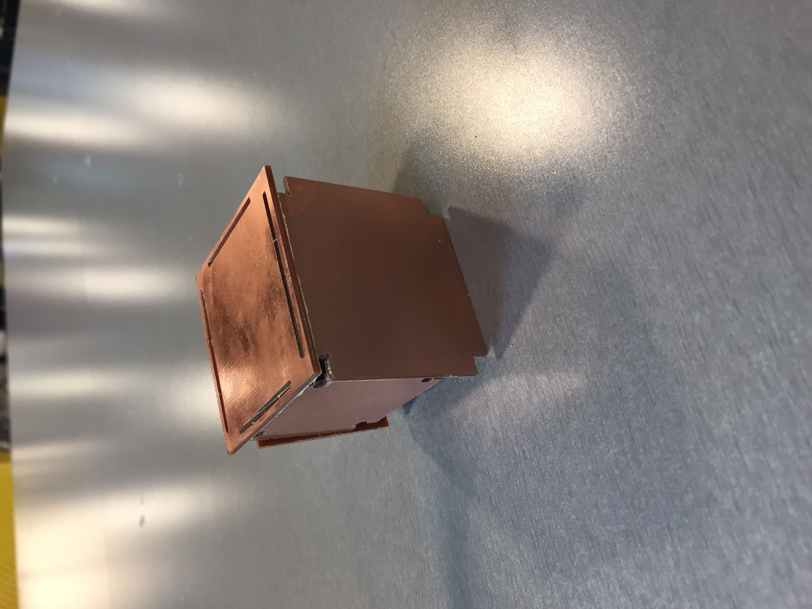

A6: Molding and casting

For this assignment, I created a starfish.
I started by creating the outside mold in Rhino and I downloaded the shape from thingiverse
Starfish from thingiverse webpage
Starfish image
I then added the starfish to the mold and ensured that the base of the starfish touched the base of the mold and that there were no gaps.
Outer mold in Rhino
Another view of outer mold in Rhino
Hearing about all the difficulties people were facing with wax milling, I decided to 3d print my outer mold, so I prepared my rhino .stl file in dremel to produce gcode file.
Mold getting ready to be 3D printed via Dremel
 I used the default settings for the 3D print, except profile (changed it to Medium Quality - 0.2 mm) and it took 3.5 hrs to complete without any complications.
3D printing in action at the MILL
I used the default settings for the 3D print, except profile (changed it to Medium Quality - 0.2 mm) and it took 3.5 hrs to complete without any complications.
3D printing in action at the MILL
The outer mold looks like this:
Then I went ahead to create the actual mold using Oomoo Smooth-On Silicone. A picture the mold air drying.
 The mold came out smoothly with the use of a blunt knife.
The part showed some red spots and a message on the right: 'Marked areas need a smaller tool'.
To remove the error I went back to the lecture video and realized I did not add kerf to the the parts. I went back to edit the files in Onshape and added kerf.
Kerf added to shapes in Onshape
I did the same steps again using kiCad and then opened the file in Bantam Tools. Again it showed the same error.
FR1 dimensions:
Thickness = 0.06 in
Length = 10 cm
Width = 7 cm
Then I reworked on them again and this time it worked.
CNC Milling in action:
The mold came out smoothly with the use of a blunt knife.
The part showed some red spots and a message on the right: 'Marked areas need a smaller tool'.
To remove the error I went back to the lecture video and realized I did not add kerf to the the parts. I went back to edit the files in Onshape and added kerf.
Kerf added to shapes in Onshape
I did the same steps again using kiCad and then opened the file in Bantam Tools. Again it showed the same error.
FR1 dimensions:
Thickness = 0.06 in
Length = 10 cm
Width = 7 cm
Then I reworked on them again and this time it worked.
CNC Milling in action:
Final Result:

Source Files:
Onshape file 1
Onshape file 2
Onshape file 3
Kicad File 1
Kicad File 2
Kicad File 3
Bantam File 1
Bantam File 2
Bantam File 3